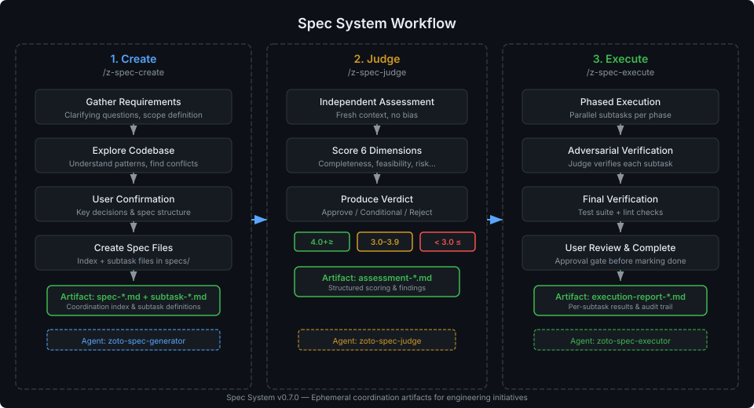
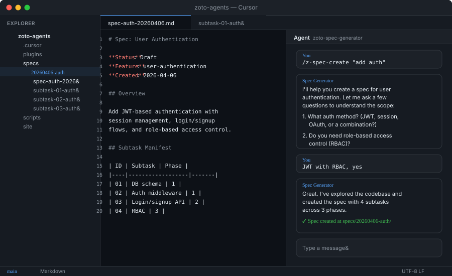
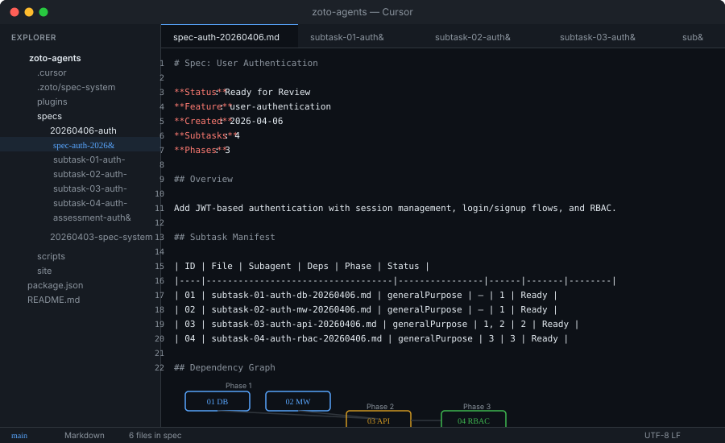
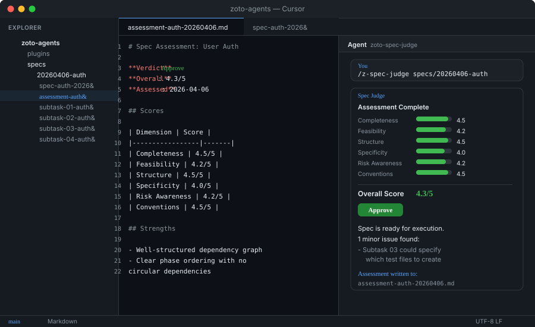

Quickstart Walkthrough
This guide walks you through the complete Spec System lifecycle — from creating your first spec to shipping verified code. By the end, you'll have used all three commands and understand how they fit together.

Example Scenario
Throughout this guide we'll follow a realistic example: adding a Redis caching layer to an API. The commands you'll run are:
# Step 1 — Create the spec
/zoto-spec-create Add a Redis caching layer to our API endpoints
# Step 2 — Judge the spec
/zoto-spec-judge specs/20260406-redis-caching/spec-redis-caching-20260406.md
# Step 3 — Execute the spec
/zoto-spec-execute specs/20260406-redis-caching/
# Step 4 — Review and ship (manual)Prerequisites
Before you start, make sure you have:
- Cursor IDE installed and running
- The zoto-spec-system plugin installed in your workspace (see the Overview for installation instructions)
- A project open in Cursor that you want to add a feature to
Step 0: Configure Optional
The Spec System works out of the box with sensible defaults. If you want to customize directory paths or naming, create a config file:
mkdir -p .zoto-spec-system
touch .zoto-spec-system/config.jsonA minimal configuration looks like this:
{
"specsDir": "specs",
"unitOfWork": "spec"
}
You can skip configuration entirely. Specs will be stored in specs/,
work items are called "specs", and all other defaults apply. See the
Configuration Reference for the full list of options.
Step 1: Create a Spec
Open the Cursor chat and type the /zoto-spec-create command followed
by a description of what you want to build:
/zoto-spec-create Add a Redis caching layer to our API endpointsWhat happens
The Spec System spawns a generator agent that follows an 8-step workflow:
- Gathers requirements — asks you clarifying questions about scope, constraints, and goals
- Explores your codebase — scans files and patterns to understand existing architecture
- Proposes key decisions — presents architectural choices for your approval
- Builds the dependency graph — determines which subtasks depend on which
- Assigns agents — picks the right subagent type for each subtask
- Creates the spec files — writes the index and subtask files to disk
- Reviews with you — presents the full spec for your approval
- Runs an automatic judge — assesses quality before finalizing
What you'll see in Cursor

What gets created
After you approve, the system creates a spec directory with an index file and individual subtask files:

specs/20260406-redis-caching/
├── spec-redis-caching-20260406.md # Coordination index
├── subtask-01-redis-caching-setup-20260406.md
├── subtask-02-redis-caching-client-20260406.md
├── subtask-03-redis-caching-middleware-20260406.md
├── subtask-04-redis-caching-invalidation-20260406.md
└── subtask-05-redis-caching-tests-20260406.mdThe spec index contains the subtask manifest — the source of truth for the entire lifecycle:
# Spec: Redis Caching Layer
**Feature**: redis-caching
**Created**: 2026-04-06
**Status**: Ready for Review
## Overview
Add a Redis caching layer to API endpoints to reduce database load
and improve response times for frequently accessed resources.
## Subtask Manifest
| ID | File | Subagent | Dependencies | Phase |
|----|------|----------|-------------|-------|
| 01 | subtask-01-redis-caching-setup-20260406.md | generalPurpose | — | 1 |
| 02 | subtask-02-redis-caching-client-20260406.md | generalPurpose | 01 | 2 |
| 03 | subtask-03-redis-caching-middleware-20260406.md | generalPurpose | 02 | 3 |
| 04 | subtask-04-redis-caching-invalidation-20260406.md | generalPurpose | 02 | 3 |
| 05 | subtask-05-redis-caching-tests-20260406.md | generalPurpose | 03, 04 | 4 |
## Definition of Done
- [ ] Redis client configured and connecting
- [ ] Cache middleware intercepts API responses
- [ ] Invalidation strategy implemented
- [ ] Integration tests passing
- [ ] No linter errors introducedThe creation process takes a few minutes. The agent will ask you 2–5 questions, then generate the spec files. You'll approve the spec before it's finalized. The automatic judge review runs immediately after your approval.
Step 2: Judge the Spec
The judge runs automatically after spec creation, but you can also run it manually at any time. Pass the path to your spec index:
/zoto-spec-judge specs/20260406-redis-caching/spec-redis-caching-20260406.mdWhat happens
A fresh, independent judge agent assesses your spec across six dimensions. It has no knowledge of the creation process, ensuring an unbiased evaluation.
- Loads the spec index and all subtask files
- Explores the codebase to verify assumptions
- Scores each of six quality dimensions (1–5)
- Validates the subtask manifest and dependency graph
- Checks each subtask for quality and completeness
- Writes an assessment report to the spec directory
- Offers to apply fixes — presents actionable findings and asks whether to apply them directly to the spec files
What you'll see

Understanding the verdict
The overall score is a weighted average of all six dimensions:
| Dimension | Weight | What It Measures |
|---|---|---|
| Completeness | 25% | All requirements covered, no gaps in deliverables |
| Feasibility | 20% | Subtasks are achievable, scope is realistic |
| Structure | 20% | Dependencies are correct, phases are logical |
| Specificity | 15% | Clear objectives, concrete deliverables |
| Risk Awareness | 10% | Edge cases considered, blockers identified |
| Convention Compliance | 10% | Matches your repository's patterns and tooling |
The verdict determines what happens next:
| Verdict | Score | Action |
|---|---|---|
| Approve | 4.0+ | Spec is ready for /zoto-spec-execute |
| Conditional | 3.0–3.9 | Address the listed findings before executing |
| Reject | < 3.0 | Significant issues — rework with /zoto-spec-create |
If the judge returns a Conditional or Reject verdict, it will present the
actionable findings and offer to apply fixes directly to your spec files
(dependencies, deliverables, missing sections, etc.). Accept to have the issues
resolved automatically, or decline to address them manually. You can re-run
/zoto-spec-judge after fixes until you reach an Approve verdict.
Step 3: Execute the Spec
Once your spec is approved, run the execute command to have the system implement it:
/zoto-spec-execute specs/20260406-redis-caching/What happens
The executor agent coordinates the entire implementation through a structured pipeline:
- Validates the manifest — confirms all files exist and dependencies are consistent
- Confirms with you — presents an execution summary and waits for your approval
- Executes phase by phase — spawns subagents for each subtask, respecting dependency order
- Verifies adversarially — after each subtask, a fresh judge agent independently confirms deliverables
- Runs final checks — full test suite, linter, and quality audit
- Writes the execution report — a persistent record of what was done
What you'll see

Phase execution model
Subtasks run in phases. Within a phase, independent subtasks run in parallel (up to 4 at a time by default). The next phase doesn't start until all subtasks in the current phase are complete and verified.
For our Redis caching example:
| Phase | Subtasks | What happens |
|---|---|---|
| 1 | 01 (Setup) | Redis dependencies and configuration added |
| 2 | 02 (Client) | Redis client module created |
| 3 | 03 (Middleware), 04 (Invalidation) | Run in parallel — both depend on the client |
| 4 | 05 (Tests) | Integration tests covering all components |
Adversarial verification
After each subtask completes, a fresh judge agent (not the one that did the work) independently verifies every deliverable. The judge:
- Confirms files exist and have expected content
- Checks that code builds and passes linting
- Validates that tests exist and are syntactically correct
- Sets the authoritative checklist state — unticking anything it can't confirm
Each subtask receives a verdict: Verified, Partial, or Failed. If a subtask fails verification, execution pauses and you're asked how to proceed.
Execution time depends on spec complexity. A 5-subtask spec typically takes 5–15 minutes. You'll see progress updates between phases, and the system will stop to ask you if anything fails verification.
Step 4: Verify & Ship
After execution completes, the system writes an execution report and presents it for your review:
specs/20260406-redis-caching/
├── spec-redis-caching-20260406.md
├── subtask-01-redis-caching-setup-20260406.md
├── ...
└── execution-report-redis-caching-20260406.md # <-- NewReading the execution report
The report contains a complete record of the execution:
# Execution Report: Redis Caching Layer
**Spec**: spec-redis-caching-20260406.md
**Started**: 2026-04-06 14:23:01 UTC
**Completed**: 2026-04-06 14:35:42 UTC
**Duration**: 12m 41s
**Status**: Completed
## Subtask Results
| ID | Subtask | Subagent | Verification | Files Modified |
|----|---------|----------|-------------|----------------|
| 01 | Setup | generalPurpose | Verified | 3 |
| 02 | Client | generalPurpose | Verified | 2 |
| 03 | Middleware | generalPurpose | Verified | 4 |
| 04 | Invalidation | generalPurpose | Verified | 2 |
| 05 | Tests | generalPurpose | Verified | 3 |
## Verification Results
### Test Suite
- Status: PASS
- Tests run: 24
### Linter
- Status: CLEANReviewing the changes
Before approving, review the work:
- Read the execution report — check that all subtasks are Verified and tests pass
- Review modified files — the report lists every file that was created or changed
- Run the application — verify the feature works as expected in your local environment
- Check edge cases — test the scenarios from the spec's risk analysis
Once you're satisfied, approve the spec in the chat. The system marks it as Completed and the lifecycle is done.
After approval, your changes are ready to commit and push. The spec directory serves as a permanent record of what was planned, assessed, and executed — useful for code reviews and future reference.
What's Next
Now that you've completed the full lifecycle, explore these resources: